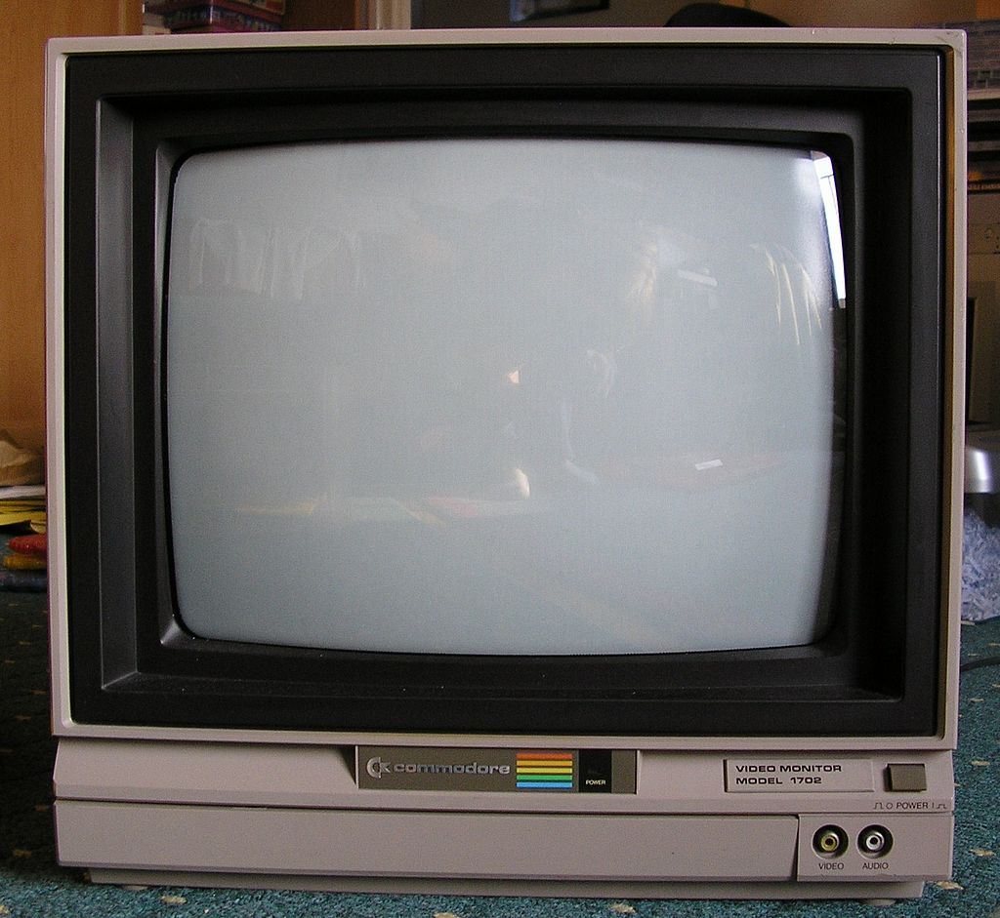

Commodore Monitor 1702

Price : $412.89
Display
Type: CRT (Cathode Ray Tube)
Tube: Hitachi 370KNB22
Size: 13-inch Diagonal
Aspect Ratio: 4:3
Native Resolution: 240p, 480i
Dot Pitch: 0.64mm
Deflection Angle: 90°
Mask Type: Slot Mask
Inputs
Front: Composite (RCA)
Rear: Seperated Composite (Chroma + Luma, RCA)
Formats Supported: NTSC
Vertical Scan Range: 50 Hz, 60 Hz
Input Selector: Rear toggle switch to choose front or rear input
Focus Type: Single